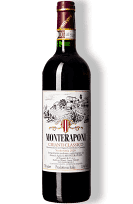

Vinhos Por Países
Vinho Argentino

Malbec
O vinho Malbec é um vinho tinto seco produzido a partir da uva Malbec, que é nativa do sudoeste da França. Na Argentina, a uva Malbec prosperou e se tornou a variedade emblemática do país. Os vinhos Malbec argentinos são conhecidos por sua riqueza e intensidade, com notas de frutas escuras, como amora e cereja, e um sabor aveludado. Eles geralmente são envelhecidos em barris de carvalho, o que lhes dá um sabor tostado e de baunilha. A Argentina é um dos maiores produtores de vinho do mundo e produz alguns dos melhores vinhos Malbec.
Vinho Português

Vinho Verde
O Vinho Verde é um vinho branco ou rosé produzido na região do Minho, no noroeste de Portugal. É um vinho fresco e leve, com um sabor ligeiramente cítrico e uma acidez refrescante. É geralmente feito a partir de uma mistura de uvas brancas locais, como Alvarinho, Loureiro e Trajadura. O nome "verde" não se refere à cor do vinho, mas sim ao fato de que é consumido jovem, geralmente apenas alguns meses após a colheita. O Vinho Verde é um excelente vinho para se desfrutar em dias quentes de verão.
Vinho Australiano
Vinho Syrah
Shiraz é um vinho tinto produzido a partir da uva Syrah. Embora a uva seja originária da França, a Austrália é conhecida por seus vinhos Shiraz excepcionais. Os vinhos Shiraz australianos são geralmente ricos e encorpados, com notas de frutas escuras, como ameixa e cereja preta, além de um sabor apimentado e de carvalho. Eles são frequentemente envelhecidos em barris de carvalho americano, o que lhes dá um sabor tostado e de baunilha. O Shiraz australiano é frequentemente comparado com o Zinfandel americano.
Vinho Italiano

Chianti
Chianti é um vinho tinto produzido na região da Toscana, na Itália. É feito a partir de uma mistura de uvas locais, principalmente Sangiovese, e é conhecido por seu sabor seco e de taninos firmes. Os vinhos Chianti são frequentemente envelhecidos em barris de carvalho, o que lhes dá um sabor tostado e de baunilha. Eles têm notas de frutas vermelhas, como cereja e framboesa, e um sabor levemente picante. Chianti é frequentemente servido com pratos de carne, especialmente com massas e molhos vermelhos. É um vinho versátil que pode ser apreciado tanto jovem quanto após anos de envelhecimento em garrafa.